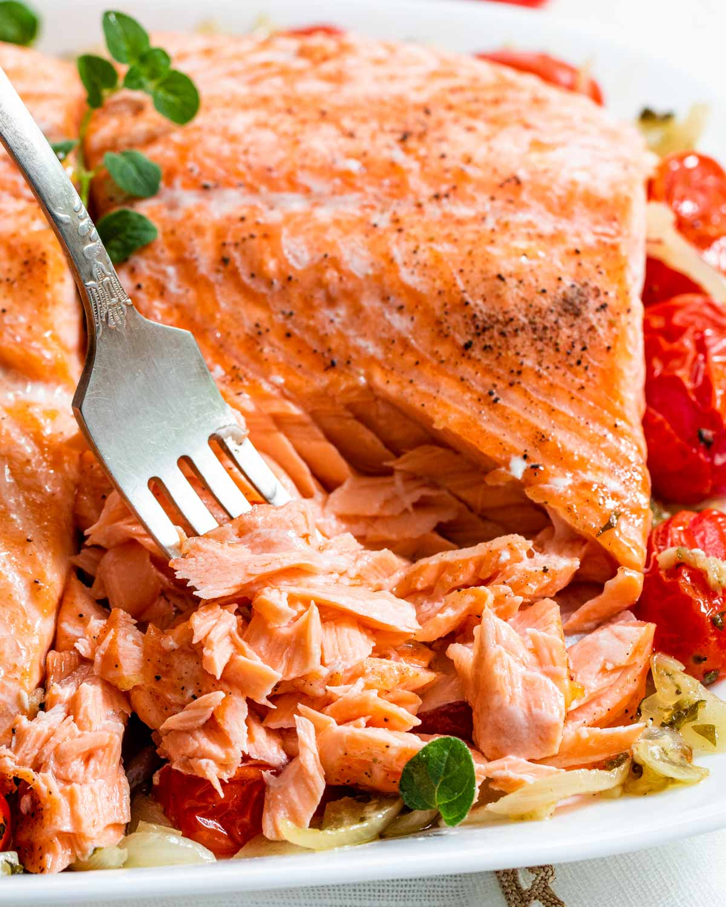

Home
Salmon Bake

Description
Enjoy a simple yet delicious dinner with this salmon bake! Perfect for fans of simple rice plates while being quick, easy, and healthy.
Ingredients
- 1 large salmon filet
- 1-2 packs cherry tomatoes
- 1 large yellow onion
- 8-10 cloves of garlic
- 1 Tbsp dry thyme
- 1 Tbsp dry marjoram
- olive oil
Steps
- Prepare sautee ingredients: Thinnly julienne the yellow onion, cut cherry tomatoes into halves, thinnly dice garlic cloves.
* This is a good time to preheat the oven to 350°F
- Heat a pan over medium heat with olive oil and sautee onions and garlic until onions are half cooked (about 1 minute).
- Throw cherry tomatoes and dry herbs into pan and sautee for an additional minute.
-
Prepare large baking dish: Pour a thin layer of the sautee pan liquids into baking dish (to prevent sticking), and lay salmon filet on top.
Pour rest of sautee pan contents on top of the salmon filet and cover baking dish with foil.
- Throw baking dish in the oven at 350°F for about 30-40 minutes (until bubbles begin to form).
- Let rest for at least 5-10 minutes. Serve over a plate of rice and enjoy!